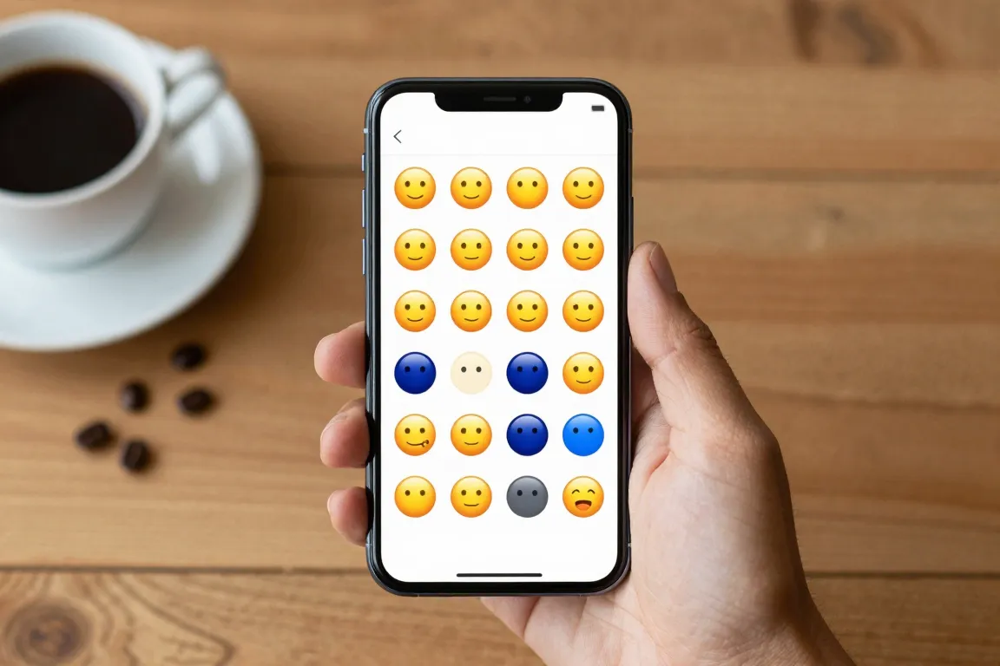

Et sett med små fargebilder som står i tekst som tegn: gule ansikter, hender, mat og flagg. Japanske mobilprodusenter tegnet de første settene; Unicode 6.0 tok dem inn i standarden i 2010.

Kjerneidé
Et bilde blir et tegn: det samme lille gule ansiktet kan komme inn i hvilken som helst tekst på hvilken som helst enhet.
Designprinsipper
Tegn hver glyf på et kvadratisk felt med forholdet 1:1 og sett den i linjehøyden til teksten, 1,2em.
Bruk et rundt gult ansikt (#FFC83D) med en mørkere kant på 1px, to enkle øyne og en munn av én kurve.
Fyll former med flat farge og ett mykt høylys; hold omrisset på 1px eller uten.
Vis en hudtone med 5 fargeprøver fra #FADCBC til #3D2B1F som en modifikatorrad under en håndglyf.
Sett glyfen i et velgerrutenett med 8 kolonner og 8px rennesteiner og en fanerad med 9 kategorier.
Hold tekstskriften nøytral og rund, slik at glyfen er den eneste fargen på linjen.
La glyfen være 1,0em til 1,2em i tekst og 32px til 48px i en velger.
Antimønstre
Glyfer tegnet i en annen størrelse enn linjen
Fotografiske emojier med realistisk hud og lys
Tunge omriss på 3px eller mer
Emoji satt på en mørk gradient som skjuler det gule
Egne emojier uten felles grunnform
Blandede glyfsett fra ulike leverandører på én linje